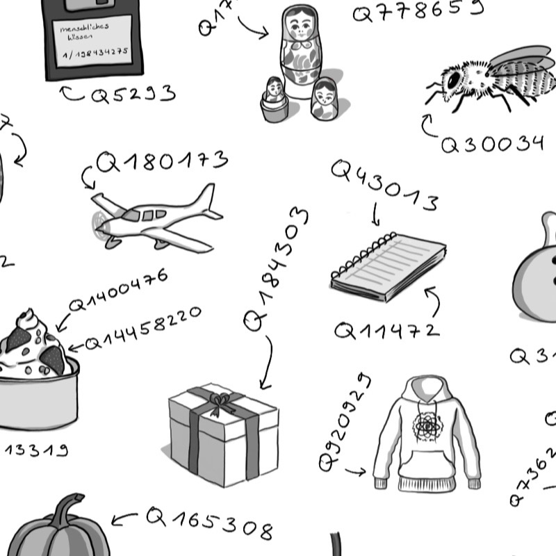

About the record
The chapel had no heating and a slate floor, which is audible on about half the record and was left in deliberately. Nothing here is gridded and there are no overdubs beyond a single vocal on Ferry, Last Light.
It is the first record the band has made without a producer in the room, which shows in the running order more than the sound — the two longest tracks sit next to each other in the middle, which nobody outside the band thought was a good idea.
Tracklist
Credits
Nadia Berger — vocals, guitar · Tomás Ferreira — bass · Ana Lindqvist
— drums · Rhys Callaghan — keys, tape.
Recorded and mixed by the band. Mastered at Salt Room, Aveiro.
Sleeve photograph by Nadia Berger.
Formats
Ships from 12 September. Digital arrives on release day.